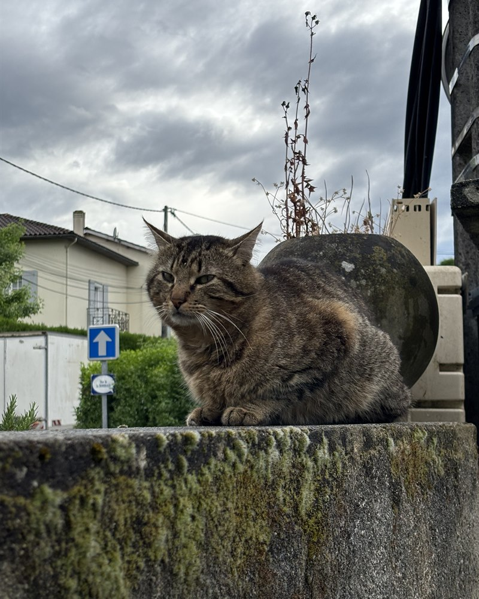
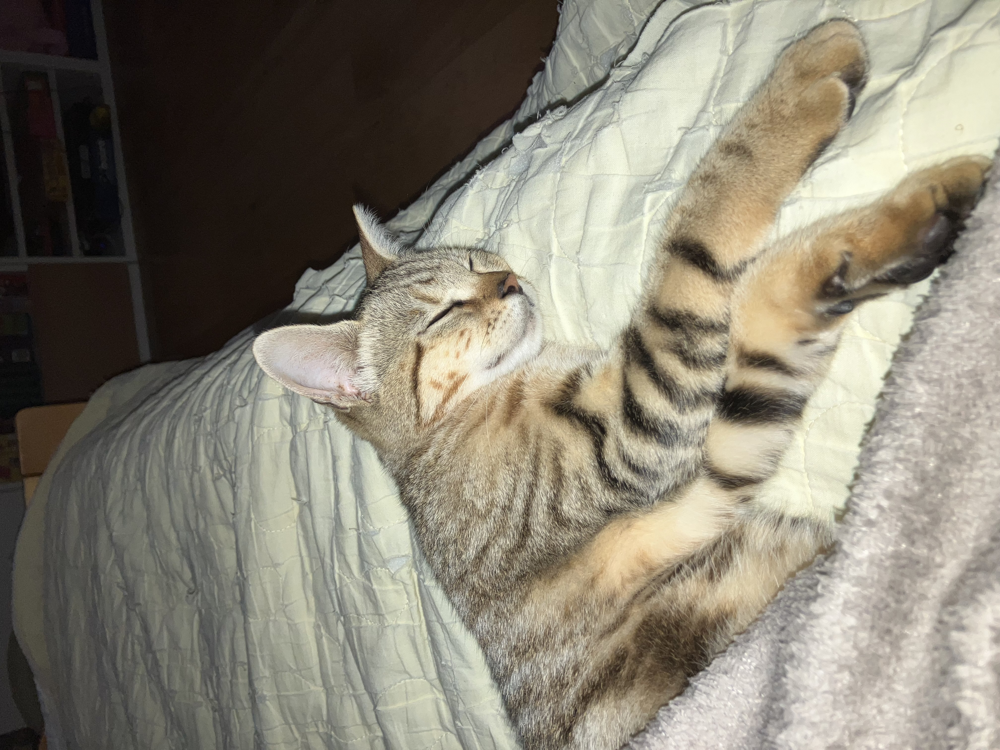

 🌿 Association loi 1901 · Fondée en 2026
🌿 Association loi 1901 · Fondée en 2026
Protéger,
soigner,
aimer.
CAT'S GARDEN est une association dédiée à la protection des chats errants du quartier Frégeneuil/Sillac d'Angoulême (16 - Charente). Chaque chat mérite un refuge, des soins et de l'amour.
